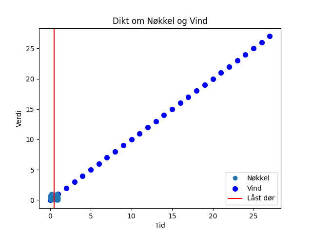

En rusten nøkkel i gresset lå, den visste ikke hvor den skulle gå. Vinden hvisket om en låst dør i sør, der ingen hadde åpnet siden i går.

import matplotlib.pyplot as plt
import numpy as np
# Dikt
dikt = """
En rusten nøkkel i gresset lå,
den visste ikke hvor den skulle gå.
Vinden hvisket om en låst dør i sør,
der ingen hadde åpnet siden i går.
"""
# Konverter diktet til en liste av ord
ord = dikt.split()
# Lag en graf som representerer nøkkelen
x = np.linspace(0, 1, 100)
y = np.random.rand(100)
plt.plot(x, y, 'o', label='Nøkkel')
# Lag en graf som representerer vinden
plt.scatter(np.arange(len(ord)), [i for i in range(len(ord))], s=50, c='blue', label='Vind')
# Lag en graf som representerer døren
plt.axvline(x=0.5, color='red', label='Låst dør')
# Legg til tittel og akseetiketter
plt.title('Dikt om Nøkkel og Vind')
plt.xlabel('Tid')
plt.ylabel('Verdi')
plt.legend()
# Lagre figuren
plt.savefig(output_path)execution_ok=True fallback_used=False image_ok=True